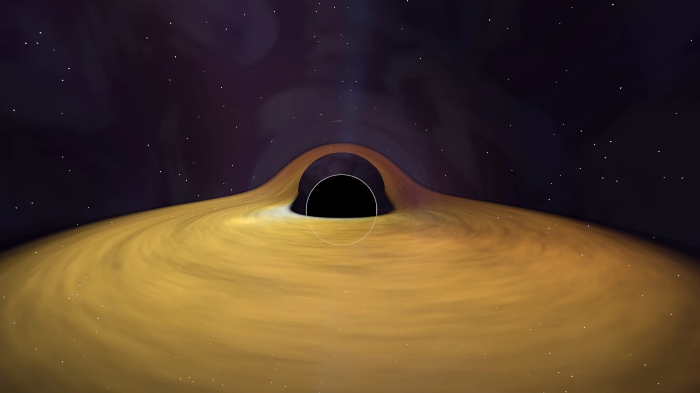
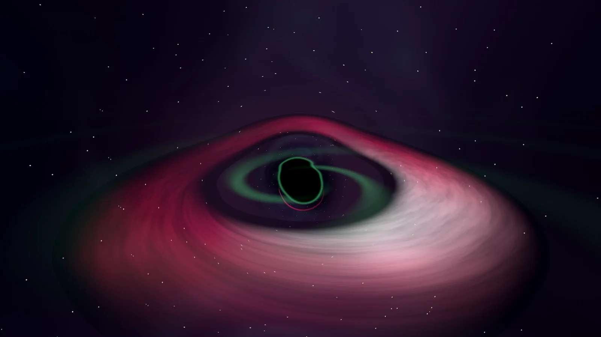
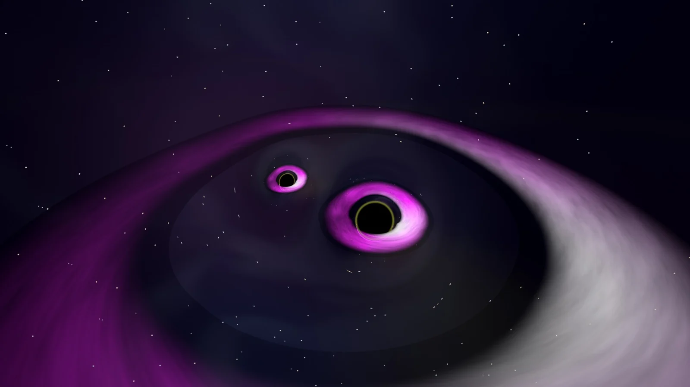

Black Hole
Ships in 26.10A ray-traced black hole with a lensed accretion disk, photon ring, relativistic jets and a live star field. The default screensaver.
- Engine
- NCZ Black Hole engine (GLES3)
- Settings
- Palettes: stylized, kipthorne, faithful, singularity, slingshot, whitehole, eht (cygnus proposed). Presets such as Kerr, TON 618, Sagittarius A*, M87*.
- Randomization
- Each run draws a new seed: disk turbulence, camera path and star field differ every time. A fixed seed can be pinned for reproducible captures.

